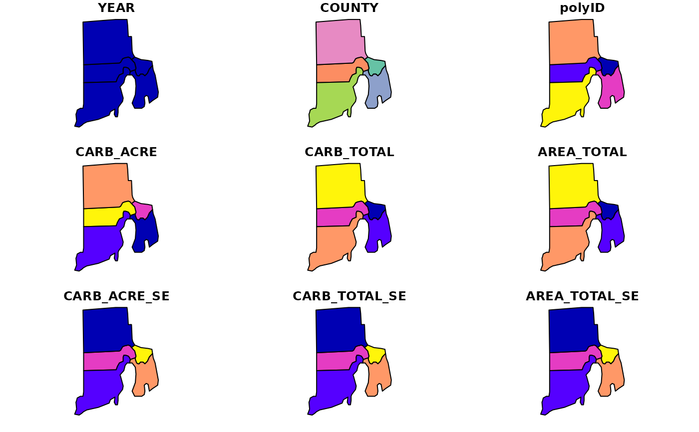
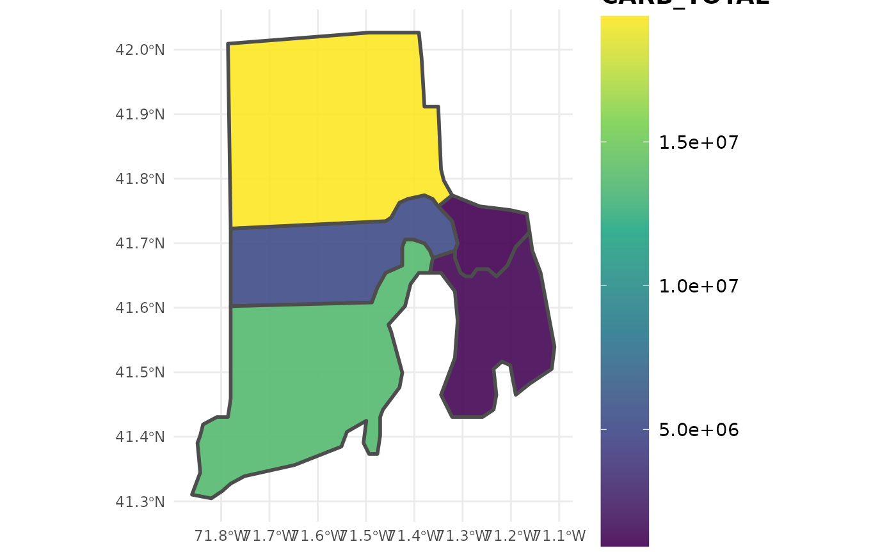

Estimate carbon stocks by IPCC forest carbon pools from the FIADB
carbon.RdProduces estimates of carbon (metric tonnes) on a per acre basis from FIA data, along with population estimates for each variable. Estimates are consistent with those used in the EPA's Greenhouse Gas Inventory Estimates. Can be produced for regions defined within the FIA Database (e.g. counties), at the plot level, or within user-defined areal units. Options to group estimates by IPCC forest carbon pools, IPCC forest carbon components, and other variables defined in the FIADB. If multiple reporting years (EVALIDs) are included in the data, estimates will be output as a time series. If multiple states are represented by the data, estimates will be output for the full region (all area combined), unless specified otherwise (e.g. grpBy = STATECD).
Usage
carbon(db, grpBy = NULL, polys = NULL, returnSpatial = FALSE,
byPool = TRUE, byComponent = FALSE, landType = "forest",
method = "TI", lambda = 0.5, areaDomain = NULL,
totals = FALSE, variance = FALSE, byPlot = FALSE,
condList = FALSE, nCores = 1)Arguments
- db
FIA.DatabaseorRemote.FIA.Databaseobject produced fromreadFIA()orgetFIA(). If aRemote.FIA.Database, data will be read in and processed state-by-state to conserve RAM (see details for an example).- grpBy
variables from PLOT or COND tables to group estimates by (NOT quoted). Multiple grouping variables should be combined with
c(), and grouping will occur heirarchically. For example, to produce seperate estimates for each ownership group within methods of stand regeneration, specifyc(STDORGCD, OWNGRPCD).- polys
sporsfPolygon/MultiPolgyon object; Areal units to bin data for estimation. Separate estimates will be produced for region encompassed by each areal unit. FIA plot locations will be reprojected to match projection ofpolysobject.- returnSpatial
logical; if TRUE, merge population estimates with
polysand return assfmultipolygon object. WhenbyPlot = TRUE, return plot-level estimates assfspatial points.- byPool
logical; if TRUE, return estimates grouped by IPCC forest carbon pools (i.e., aboveground live, belowground live, dead wood, litter, and soil organic).
- byComponent
logical; if TRUE, return estimates grouped by IPCC forest carbon components (i.e., aboveground live overstory, aboveground live understory, belowground live overstory, belowground live understory, standing dead wood, down dead wood, litter, and soil organic).
- landType
character ("forest", "timber", or "all"); Type of land that estimates will be produced for. Timberland is a subset of forestland (default) which has high site potential and non-reserve status (see details). When "forest" or "timber", ratios represent average forest carbon density on forest or timberland, i.e., non-forested conditions are excluded. When "all", ratios represent average forest carbon density across all land uses, including non-forest.
- method
character; design-based estimator to use. One of: "TI" (temporally indifferent, default), "annual" (annual), "SMA" (simple moving average), "LMA" (linear moving average), or "EMA" (exponential moving average). See Stanke et al 2020 for a complete description of these estimators.
- lambda
numeric (0,1); if
method = 'EMA', the decay parameter used to define weighting scheme for annual panels. Low values place higher weight on more recent panels, and vice versa. Specify a vector of values to compute estimates using mulitple weighting schemes, and useplotFIAwithgrpset tolambdato produce moving average ribbon plots. See Stanke et al 2020 for examples.- areaDomain
logical predicates defined in terms of the variables in PLOT and/or COND tables. Used to define the area for which estimates will be produced (e.g. within 1 mile of improved road:
RDDISTCD %in% c(1:6), Hard maple/basswood forest type:FORTYPCD == 805. Multiple conditions are combined with&(and) or|(or). Only plots within areas where the condition evaluates to TRUE are used in producing estimates. Should NOT be quoted.- totals
logical; if TRUE, return total population estimates (e.g. total area) along with ratio estimates (e.g. mean trees per acre).
- variance
logical; if TRUE, return estimated variance (
VAR) and sample size (N). If FALSE, return 'sampling error' (SE) as returned by EVALIDator. Note: sampling error cannot be used to construct confidence intervals.- byPlot
logical; if TRUE, returns estimates for individual plot locations instead of population estimates.
- condList
logical; if TRUE, returns condition-level summaries intended for subsequent use with
customPSE().- nCores
numeric; number of cores to use for parallel implementation. Check available cores using
detectCores(). Default = 1, serial processing.
Details
Estimation Details
Estimation of forest variables follows the procedures documented in Bechtold and Patterson (2005) and Stanke et al 2020. Specifically, carbon mass per acre is computed using a sample-based ratio-of-means estimator of total volume / total land area within the domain of interest.
Estimation of carbon stocks draws on measured (e.g., tree carbon) and modeled attributes (e.g., soil organic carbon). This function is intended to produce estimates consistent with those in the EPA's Greenhouse Gas Inventory Estimates. Importantly, estimates are reported in metric tonnes - this is a key distinction relative to other rFIA functions, which report estimates in Imperial units. See the following for more info: http://www.epa.gov/climatechange/ghgemissions/usinventoryreport/archive.html
IPCC forest carbon pools are aboveground live biomass, belowground live biomass, dead wood, litter, and soil organic carbon. Aboveground live biomass, belowground live biomass, and dead wood consist of both actual tree measurements and modeled attributes, while litter and soil organic carbon are based completely on modeled attributes. IPCC forest carbon components are defined as follows:
AG_OVER_LIVE: measured attribute. Carbon in the aboveground portion of live trees with at least 1.0 inch dbh/drc. Calculated from the FIADB TREE.CARBON_AG attribute for live trees.
AG_UNDER_LIVE: modeled attribute. Carbon in the aboveground portion of seedlings and woody shrubs. Not a direct sum of P2 or P3 measurements. Calculated from FIADB COND.CARBON_UNDERSTORY_AG attribute.
BG_OVER_LIVE: measured attribute. Carbon in the belowground portion of a tree, including coarse roots with a root diameter of at least 0.1 inch, for live trees with 1.0 inch dbh/drc. Calculated from the FIADB TREE.CARBON_BG attribute for live trees.
BG_UNDER_LIVE: modeled attribute. Carbon in the belowground portion of seedlings and woody shrubs. Not a direct sum of P2 or P3 measurements. Calculated from COND.CARBON_UNDERSTORY_BG attribute.
DOWN_DEAD: modeled attribute. Carbon of woody material greater than 3 inches in diameter on the ground, and stumps and their roots greater than 3 inches in diameter. Not a direct sum of P2 or P3 measurements. Calculated from FIADB COND.CARBON_DOWN_DEAD attribute.
STAND_DEAD: measured attribute. Carbon in the aboveground and belowground portion of standing dead trees with at least 1.0 inch dbh/drc. Belowground measurements include coarse roots with a root diameter of at least 0.1 inch. Calculated from the FIADB TREE.CARBON_AG and TREE.CARBON_BG columns for dead trees. NOTE: prior to rFIA v0.1.0, the argument
modelSnagallowed users to specify whether this was calculated based on modeled attributes or actual tree measurements. This argument has been removed and we no longer provide the option for generating carbon in snags from modeled attributes and instead the estimates come directly from tree measurements in FIADB.LITTER: modeled attribute. Carbon of organic material on the floor of the forest, including fine woody debris, humus, and fine roots in the organic forest floor layer above mineral soi. This is based on litter carbon observations on FIA plots, but it is not a direct sum of P2 or P3 measurements. Calculated from FIADB COND.CARBON_LITTER attribute.
SOIL_ORG: modeled attribute. Carbon in fine organic material below the soil surface to a depth of 1 meter. Does not include roots. This is based on soil organic carbon observations on FIA plots, but it is not a direct sum of P2 or P3 measurements. Calculated from FIADB COND.CARBON_SOIL_ORG attribute.
Users may specify alternatives to the 'Temporally Indifferent' estimator using the method argument. Alternative design-based estimators include the annual estimator ("ANNUAL"; annual panels, or estimates from plots measured in the same year), simple moving average ("SMA"; combines annual panels with equal weight), linear moving average ("LMA"; combine annual panels with weights that decay linearly with time since measurement), and exponential moving average ("EMA"; combine annual panels with weights that decay exponentially with time since measurement). The "best" estimator depends entirely on user-objectives, see Stanke et al 2020 for a complete description of these estimators and tradeoffs between precision and temporal specificity.
When byPlot = FALSE (i.e., population estimates are returned), the "YEAR" column in the resulting dataframe indicates the final year of the inventory cycle that estimates are produced for. For example, an estimate of current forest area (e.g., 2018) may draw on data collected from 2008-2018, and "YEAR" will be listed as 2018 (consistent with EVALIDator). However, when byPlot = TRUE (i.e., plot-level estimates returned), the "YEAR" column denotes the year that each plot was measured (MEASYEAR), which may differ slightly from its associated inventory year (INVYR).
Stratified random sampling techniques are most often employed to compute estimates in recent inventories, although double sampling and simple random sampling may be employed for early inventories. Estimates are adjusted for non-response bias by assuming attributes of non-response plot locations to be equal to the mean of other plots included within their respective stratum or population.
Working with "Big Data"
If FIA data are too large to hold in memory (e.g., R throws the "cannot allocate vector of size ..." errors), use larger-than-RAM options. See documentation of readFIA() for examples of how to set up a Remote.FIA.Database. As a reference, we have used rFIA's larger-than-RAM methods to estimate forest variables using the entire FIA Database (~50GB) on a standard desktop computer with 16GB of RAM. Check out our website for more details and examples.
Easy, efficient parallelization is implemented with the parallel package. Users must only specify the nCores argument with a value greater than 1 in order to implement parallel processing on their machines. Parallel implementation is achieved using a snow type cluster on any Windows OS, and with multicore forking on any Unix OS (Linux, Mac). Implementing parallel processing may substantially decrease free memory during processing, particularly on Windows OS. Thus, users should be cautious when running in parallel, and consider implementing serial processing for this task if computational resources are limited (nCores = 1).
Definition of forestland
Forest land must have at least 10-percent canopy cover by live tally trees of any size, including land that formerly had such tree cover and that will be naturally or artificially regenerated. Forest land includes transition zones, such as areas between heavily forest and non-forested lands that meet the mimium tree canopy cover and forest areas adjacent to urban and built-up lands. The minimum area for classification of forest land is 1 acre in size and 120 feet wide measured stem-to-stem from the outer-most edge. Roadside, streamside, and shelterbelt strips of trees must have a width of at least 120 feet and continuous length of at least 363 feet to qualify as forest land. Tree-covered areas in agricultural production settings, such as fruit orchards, or tree-covered areas in urban settings, such as city parks, are not considered forest land.
Timber land is a subset of forest land that is producing or is capable of producing crops of industrial wood and not withdrawn from timber utilization by statute or administrative regulation. (Note: Areas qualifying as timberland are capable of producing at least 20 cubic feet per acre per year of industrial wood in natural stands. Currently inaccessible and inoperable areas are NOT included).
Value
Dataframe or sf object (if returnSpatial = TRUE). If byPlot = TRUE, values are returned for each plot (PLOT_STATUS_CD = 1 when forest exists at the plot location). All variables with names ending in SE, represent the estimate of sampling error (%) of the variable. When variance = TRUE, variables ending in VAR denote the variance of the variable and N is the total sample size (i.e., including non-zero plots).
YEAR: reporting year associated with estimates
CARB_ACRE: estimate of mean total carbon per acre ( metric tonnes/acre)
nPlots_TREE: number of non-zero plots used to compute carbon estimates
nPlots_AREA: number of non-zero plots used to compute land area estimates
References
rFIA website: https://rfia.netlify.app/
FIA Database User Guide: https://research.fs.usda.gov/understory/forest-inventory-and-analysis-database-user-guide-nfi
Bechtold, W.A.; Patterson, P.L., eds. 2005. The Enhanced Forest Inventory and Analysis Program - National Sampling Design and Estimation Procedures. Gen. Tech. Rep. SRS - 80. Asheville, NC: U.S. Department of Agriculture, Forest Service, Southern Research Station. 85 p. https://www.srs.fs.usda.gov/pubs/gtr/gtr_srs080/gtr_srs080.pdf
Stanke, H., Finley, A. O., Weed, A. S., Walters, B. F., & Domke, G. M. (2020). rFIA: An R package for estimation of forest attributes with the US Forest Inventory and Analysis database. Environmental Modelling & Software, 127, 104664.
Westfall, James A., Coulston, John W., Gray, Andrew N., Shaw, John D., Radtke, Philip J., Walker, David M., Weiskittel, Aaron R., MacFarlane, David W., Affleck, David L.R., Zhao, Dehai, Temesgen, Hailemariam, Poudel, Krishna P., Frank, Jereme M., Prisley, Stephen P., Wang, Yingfang, Sánchez Meador, Andrew J., Auty, David, Domke, Grant M. 2024. A national-scale tree volume, biomass, and carbon modeling system for the United States. Gen. Tech. Rep. WO-104. Washington, DC: U.S. Department of Agriculture, Forest Service. 37 p. https://research.fs.usda.gov/treesearch/66998.
Note
All sampling error estimates (SE) are returned as the "percent coefficient of variation" (standard deviation / mean * 100) for consistency with EVALIDator. IMPORTANT: sampling error cannot be used to construct confidence intervals. Please use variance = TRUE for that (i.e., return variance and sample size instead of sampling error).
Examples
# Load data from the rFIA package
data(fiaRI)
data(countiesRI)
# Most recents subset
fiaRI_mr <- clipFIA(fiaRI)
# Most recent estimates of carbon by IPCC pool
carbon(db = fiaRI_mr)
#> # A tibble: 5 × 6
#> YEAR POOL CARB_ACRE CARB_ACRE_SE nPlots_AREA N
#> <dbl> <chr> <dbl> <dbl> <int> <int>
#> 1 2018 AG_LIVE 33.8 3.83 127 199
#> 2 2018 BG_LIVE 6.22 4.10 127 199
#> 3 2018 DEAD_WOOD 7.10 5.08 127 199
#> 4 2018 LITTER 6.38 2.02 127 199
#> 5 2018 SOIL_ORG 63.8 1.02 127 199
# \donttest{
# Same as above, at the plot-level
carbon(db = fiaRI_mr,
byPlot = TRUE)
#> # A tibble: 635 × 6
#> PLT_CN YEAR pltID POOL CARB_ACRE PROP_FOREST
#> <dbl> <int> <chr> <chr> <dbl> <dbl>
#> 1 1.45e13 2013 1_44_9_201 AG_LIVE 15.8 0.841
#> 2 1.45e13 2013 1_44_9_201 BG_LIVE 2.52 0.841
#> 3 1.45e13 2013 1_44_9_201 DEAD_WOOD 2.79 0.841
#> 4 1.45e13 2013 1_44_9_201 LITTER 5.06 0.841
#> 5 1.45e13 2013 1_44_9_201 SOIL_ORG 43.8 0.841
#> 6 1.45e13 2013 1_44_1_228 AG_LIVE 22.0 0.667
#> 7 1.45e13 2013 1_44_1_228 BG_LIVE 4.03 0.667
#> 8 1.45e13 2013 1_44_1_228 DEAD_WOOD 4.04 0.667
#> 9 1.45e13 2013 1_44_1_228 LITTER 4.71 0.667
#> 10 1.45e13 2013 1_44_1_228 SOIL_ORG 50.3 0.667
#> # ℹ 625 more rows
# Most recent estimates of carbon by IPCC component
carbon(db = fiaRI_mr, byComponent = TRUE)
#> # A tibble: 8 × 7
#> YEAR POOL COMPONENT CARB_ACRE CARB_ACRE_SE nPlots_AREA N
#> <dbl> <chr> <chr> <dbl> <dbl> <int> <int>
#> 1 2018 AG_LIVE AG_OVER_LIVE 33.2 3.90 127 199
#> 2 2018 AG_LIVE AG_UNDER_LIVE 0.650 0.958 127 199
#> 3 2018 BG_LIVE BG_OVER_LIVE 6.15 4.15 127 199
#> 4 2018 BG_LIVE BG_UNDER_LIVE 0.0722 0.958 127 199
#> 5 2018 DEAD_WOOD DOWN_DEAD 5.86 3.78 127 199
#> 6 2018 DEAD_WOOD STAND_DEAD 1.24 23.4 127 199
#> 7 2018 LITTER LITTER 6.38 2.02 127 199
#> 8 2018 SOIL_ORG SOIL_ORG 63.8 1.02 127 199
# Most recent estimates of total carbon (i.e., all pools)
carbon(db = fiaRI_mr, byPool = FALSE)
#> # A tibble: 1 × 5
#> YEAR CARB_ACRE CARB_ACRE_SE nPlots_AREA N
#> <dbl> <dbl> <dbl> <int> <int>
#> 1 2018 117. 1.59 127 199
# Most recent estimates grouped by stand age on forest land
# Make a categorical variable which represents stand age (grouped by 10 yr intervals)
fiaRI_mr$COND$STAND_AGE <- makeClasses(fiaRI_mr$COND$STDAGE, interval = 10)
carbon(db = fiaRI_mr,
grpBy = STAND_AGE)
#> # A tibble: 55 × 7
#> YEAR STAND_AGE POOL CARB_ACRE CARB_ACRE_SE nPlots_AREA N
#> <dbl> <chr> <chr> <dbl> <dbl> <int> <int>
#> 1 2018 [0,10) AG_LIVE 0.828 3.99 2 32
#> 2 2018 [0,10) BG_LIVE 0.0921 4.05 2 32
#> 3 2018 [0,10) DEAD_WOOD 0.285 0.555 2 32
#> 4 2018 [0,10) LITTER 2.96 4.95 2 32
#> 5 2018 [0,10) SOIL_ORG 55.5 8.03 2 32
#> 6 2018 [20,30) AG_LIVE 5.42 0.00000162 1 167
#> 7 2018 [20,30) BG_LIVE 1.07 0.00000146 1 167
#> 8 2018 [20,30) DEAD_WOOD 1.97 0.00000158 1 167
#> 9 2018 [20,30) LITTER 4.85 0 1 167
#> 10 2018 [20,30) SOIL_ORG 66.4 0.00000150 1 167
#> # ℹ 45 more rows
# Same as above, but implemented in parallel (much quicker)
parallel::detectCores(logical = FALSE) # 4 cores available, we will take 2
#> [1] 16
carbon(db = fiaRI_mr,
grpBy = STAND_AGE,
nCores = 2)
#> # A tibble: 55 × 7
#> YEAR STAND_AGE POOL CARB_ACRE CARB_ACRE_SE nPlots_AREA N
#> <dbl> <chr> <chr> <dbl> <dbl> <int> <int>
#> 1 2018 [0,10) AG_LIVE 0.828 3.99 2 32
#> 2 2018 [0,10) BG_LIVE 0.0921 4.05 2 32
#> 3 2018 [0,10) DEAD_WOOD 0.285 0.555 2 32
#> 4 2018 [0,10) LITTER 2.96 4.95 2 32
#> 5 2018 [0,10) SOIL_ORG 55.5 8.03 2 32
#> 6 2018 [20,30) AG_LIVE 5.42 0.00000162 1 167
#> 7 2018 [20,30) BG_LIVE 1.07 0.00000146 1 167
#> 8 2018 [20,30) DEAD_WOOD 1.97 0.00000158 1 167
#> 9 2018 [20,30) LITTER 4.85 0 1 167
#> 10 2018 [20,30) SOIL_ORG 66.4 0.00000150 1 167
#> # ℹ 45 more rows
# Most recent estimates for all stems on forest land grouped by user-defined areal units
ctSF <- carbon(fiaRI_mr,
byPool = FALSE,
polys = countiesRI,
totals = TRUE,
returnSpatial = TRUE)
plot(ctSF) # Plot multiple variables simultaneously
#> Warning: plotting the first 9 out of 11 attributes; use max.plot = 11 to plot all

plotFIA(ctSF, CARB_TOTAL) # Plot of aboveground biomass per acre

# }